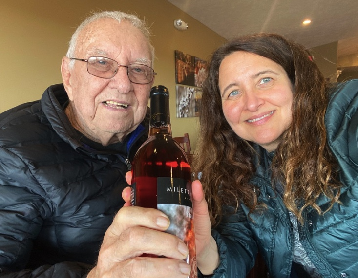

Here's to Charlie
Dad passed away unexpectedly yesterday. He was a thoughtful, funny, healthy, and active 97 years young. We loved him so much. The last thing he said on the phone that evening to Jeff was that he was so incredibly lucky to have us kids. He always said that he was damn lucky.
We were the lucky ones. And fortunately, we let each other know every day. Dad never went a day without talking to his kids. I called him every morning and night, and usually a few times times during the day to check in and laugh and love.
We weren’t done with him yet. We figured he’d make it well into his 100s.
{kind=link}

When he didn’t answer my usual 8:30 am call, I called Courtney and Susie. They both arrived 40 minutes later and together found him, already gone, in his bedroom. In the kitchen, a bucket of fresh-cut potatoes and scraps for the chickens was prepped to take to the farm. He left his truck running in the garage overnight and carbon monoxide seeped into his bathroom next to his bedroom.
This is so so so hard. My brain can’t make sense of it yet.
I don’t know who I’m going to call several times a day when I can’t call him. My siblings have the same problem. Hopefully we’ll have more calls with each other.
If you don’t have a carbon monoxide detector, get one.
Dad is at peace now, and we’re the ones who need to work through it and come to accept it. Dad would want us to remember and smile about our times together. Over the years, I’ve written down a few of the funny things he’s said that made us bend over in laughter. Some samples are below, along with his obituary and an autobiography that I edited.
Dad’s Jokes and Sayings
Dad was such a quick wit. He loved to tease me about my slow driving. Sometimes I’d drive slow just so he’d come up with more one-liners. When I was driving us back to our condo in Jackson Hole after a short trip to Yellowstone, he’d pipe up with a new line every minute or so. Our sides ached after the drive!
“Jeff, we don’t have to worry about hitting elk, we have to worry about elk hitting us.” “Jeff, is that the sun coming up in the east?” “Jeff, are we gonna catch our plane?” “Jeff, am I gonna make the Texas Tech game?” “Jeff, I’d go to sleep but I only need 8 hours.” “Jeff, see that guy we’re catching up to? He’s parked.” “Jeff, let me out so I can run along side.” “Jeff, that 55 sign, that’s not the temperature.” “Jeff, buffalo run at 35 mph. We could saddle one up and ride.”
Later, Jeff and Dad and I are driving around in the country. Dad says, “If Patti drives us up to Mt. Rushmore this summer, there’s a good possibility by the time we get there Obama’s head will be there. He’ll be out of office, perhaps retired in Chicago for a while… We can see all 5 of them.”
A couple years ago, Dad went to the doctor after cracking a rib from a fall on the ice. As a young nurse walks him across the street to get an x-ray, holding his arm tightly because it’s icy, Dad turns to her and says, “We should do this more often”.
June 2016, after gay marriage was legalized, and Obama gave his Charleston Eulogy, Dad says “You haven’t heard the best of it. He SANG. I love that little motherfucker. And I’m not gay, either.”
He went to the fitness center most weekdays to walk or ride the exercise bike – and loved that there was always lots of space. So he wrote this “Ode to the Fitness Center”: It’s cool and beautiful And I really love the place I get to walk around Without having to elbow anyone out of the way And it’s only 75 cents a day Thank you for staying away
And one of my favorites: Dad’s answer when I asked him back in 2016 for his 3 wishes for himself, someone else, and the world: For myself: Keep my health as good as possible. For family: Health and happiness for my family. For the world: I’d like to see a world where they melt all guns. Charge your enemy with pillows, and bags and bags of marshmallows.
Obituary
Charles Edward “Charlie” Schank, 97, of Central City, died at his home on Thursday, March 4. A private graveside service was held Wednesday, March 10, with family friend Cliff Mesner officiating.
Charlie was born in Clarks on October 25, 1923 to Raymond Schank and Esther Nelson. One of his early jobs was feeding and watering the chickens, which was part of his folks’ income. He began trapping on his own at twelve, and his big year in trapping was in 1947 when he trapped enough minks to buy a yellow convertible. It was no surprise that in his mid 20s, while he was selling insurance in Iowa and saw rows of pens in a yard, he stopped, learned that it was a mink ranch, and talked to rancher all day. He could hardly sleep because he knew that was what he wanted to do the rest of his life.
Shortly after that, he met Lois in Omaha, where they often danced to big bands. Charlie and Lois married on September 6, 1951. Together, they moved back to Central City, where he built his first line of pens on his father’s farm. Charlie and Lois had four children together: Jeff Schank, Suzanne Schank, Sandra Schank, and Patricia Schank. Over the next 50 years, Charlie built two mink ranches and purchased other farms to raise cattle and crops. When he and Lois divorced after 20 years, he gave his brother Jim his mink ranch and moved to Lincoln. There he bought and rented several houses, and met Barbara at a dance; they were married for 4 years. He then started a second mink ranch near Lincoln, and met Gwen at a dance; they were married for 5 years. Charlie then sold his ranch in Lincoln and returned to Central City where he planned to retire and fish. Instead, when his brother Jim needed help, he ended up taking over the mink ranch again, running it until he sort of retired in 2004. To keep busy, he raised chickens, trapped moles for neighbors, bought houses in Grand Island to rent out, and always planned to start another mink ranch. He will be remembered for his quick wit and concern for others.
Charlie is survived by his four children, granddaughter Chelsey Cameron, and three great-grandchildren. He was preceded in death by wives Lois and Barbara, his parents, and his two brothers, Raymond Schank, Jr. and James Schank.